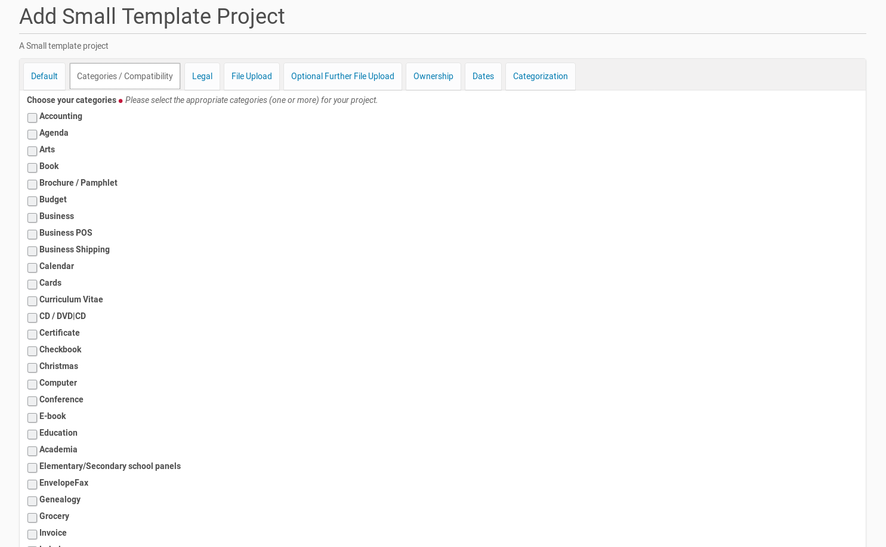

Add A New Small Template Project To The Template Center¶
A small template project is an easy and fast way to publish a very small template project inside the ‘Template Center’. This sort of project should only be used, if there is not the need to publish releases and upload files for a lot of different platforms (operating systems).
Because it was created for small projects, a small template project could be created within a few minutes. Therefor a member of the Plone site (logged-in user) click inside the ‘Template Center’ with the mouse first on the link in the box on the right side (see screenshot below).

This mouse click opens the form for providing a new Small Template Project. The form dialog consists of several register. The form fields in the first register asks for more general information about the project. It’s possible to edit and change the content of the fields later, if the focus or the features of the project varies.
The First Register ‘Default’¶
The new template project needs its own title with a length from 5 to 50 characters. This title has to be unique inside the ‘Template Center’. If there is already another small template project or an template project with the same title the member will get an error message with the appropriate information. Thus he had to choose another title for his small template project.

A new project needs also a summary and could get a full description of its purpose and features. The latter one is optional (only form fields with a red point behind the title are mandatory).
It’s also necessary that the member provides an email-address. This address will be used to get in contact with the project (owner). The ‘Template Center’ sends e.g. messages if the status of the project changes (e.g. it was published by a reviewer). Users of the project / template could send feedback to the author within a form. The content of this form will be send by email to the project (owner) (The feedback provider will not see the email address of the project).
The small template project need also a screenshot. It will be shown on the project page and helps the website user to get a first impression of the usecase of the template. The allowed file extensions are displayed next to the button to call the file dialog. The Plone site administrator choose this allowed file extensions within the ‘Template Center’.
The last field on this first register (‘Version Number’) gives the opportunity to set the version of the template file(s). The field has a default value of ‘1.0’ but it is recommend to change this number according to the state of the template. If the template is not in a stable state, the field should set to a numbering lower than 1.0. If the project owner uploads a new version of the template (template file(s)) she / he should change the value of this field.
The Second Register ‘Categories / Compatibility’¶
The small template projects were assigned to one or more categories. The creator of the template project could choose on this register one or more categories, the new small template project matches.
There is also a list of LibreOffice versions on this register. The project owner had to choose at least one of them the template is compatible with.
The list of categories and LibreOffice versions on this register had been created by the Plone site administrator within the ‘Template Center’.
{kind=link}
The Third Register ‘Legal’¶
The third register shows the necessary fields for the legal statements about the template and the small template project. It starts with the license for the template. It is possible to check more than one license for an template. This declaration need to be in accordance with the license declaration inside the template file (if there is one inside).

There is also a read-only form field which contains the text of the legal disclaimer that has to be accepted by the small template project owner. The text of the legal disclaimer will be set by the site admin inside the ‘Template Center’.
The Fourth Register ‘File Upload’¶
This register is the place to upload the template file and declare which platform it is compatible with.

If there are versions of the template file for different platforms (e.g. one for MS Windows and another one for Linux only) this further template files could be uploaded using the following register.
The list of platforms in the listing below the the upload field will be created by the site admin inside the ‘Template Center’. She / he is able to expand this list at any time if desired.